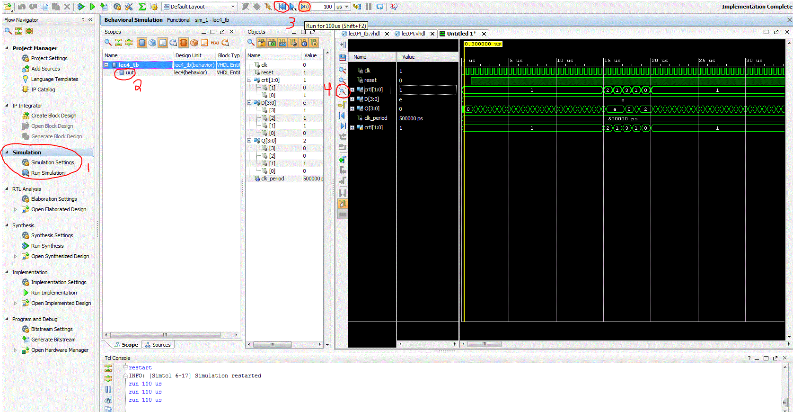

| Date: | January 15 |
| Lecture: | 4 |
| Next lecture | HW#4 |
| Status | Complete |
| Code | lec04.vhdl lec04_tb.vhdl |
| Handout | hand04.docx |
| Lesson Slides | ECE_383_Lec4.pptx |
Sequential Elements
Goals:- basic sequential process and sensitivity list
- register, counter in VHDL
- Combination of sequential and combinational logic (counters)
- Translate between schematic, truth table, and VHDL code
Mod 10 counter example
Truth Table
The following state table defines a straight forward mod 10 counter, a counter that goes from 0-9 and then wraps back around to 0.| clk | reset | ctrl | D | Q+ |
| 0,1,falling | x | xx | x | Q |
| rising | 0 | xx | x | 0 |
| rising | 1 | 00 | x | Q |
| rising | 1 | 01 | x | Q+1 mod 10 |
| rising | 1 | 10 | D | D |
| rising | 1 | 11 | x | 0 |
- The first line tells us that only a positive clock edge will result in an increment. Any other condition results in the next state of Q (denoted Q+) being unchanged (equal to Q).
- The second line defines the behavior when the reset is active low (to agree with the active-low reset on the Nexys board).
- The third row tells us that the counter will hold when the 2-bit control is equal to 00.
- The fourth row tells us that the counter will count up when the 2-bit control is equal to 01. The "mod 10" means that the counter is supposed to count from 0 to 9 and then, on the next count, roll back to 0.
- The fifth row tells us that the counter will load in the value 'D' when the 2-bit control is equal to 10.
- The sixth row tells us that the counter will synchronously reset when the 2-bit control is equal to 11.
Timing Diagram
First, we will fill out the timing diagram on the first page of hand04.docx (linked above). The key idea to remember is that the output of the counter does not change until a positive edge of the clock arrives. On the first 2 rising clock edges, reset is equal to 0 so Q will go to 0. After the second rising clock edge, though, the reset line is never low, so the behavior of the counter is dictated by the last four rows of the state table. On clock edges 3 to 30, ctrl is 01, so Q is incremented by 1. Remember that on the clock edge after Q=9, Q rolls back to 0. The following timing diagram was created in Isim to recreate the timing diagram in the handout.
Circuit Diagram
After completing the timing diagram, see if you can figure out how to construct the counter using the arrangement of devices show in the picture below.- You may assume that all these inputs are able to handle 4-bit values - to indicate this, draw a hash through the signal lines with a "4" next to it.
- You should not draw additional lines in this picture. Instead, label the wires with names and use these names to create logical connections between signals with the same name.
- Draw a border around your circuit. The only signals that should cross the boundary are those which are part of the entity description.

VHDL
As we know, the VHDL description of a circuit consists of two components: the entity and the architecture. The entity is fairly simple, as it consists of those signals in the state table description given at the top of this page - all you need is to determine the direction and type of the signals. Since 'ctrl' is selecting which operation to perform and is not a numeric value, its type is std_logic_vector. The Q and D outputs are best thought of as numerical values. Consequently, they are unsigned. In order to use these two types, the top of the VHDL file needs to reference both the std_logic_1164 and numeric_std libraries.entity lec4 is Port( clk: in STD_LOGIC; reset : in STD_LOGIC; ctrl: in std_logic_vector(1 downto 0); D: in unsigned (3 downto 0); Q: out unsigned (3 downto 0)); end lec4;The VHDL code here is going to be something new. To break it down, the code consists of three statements: the process (lines 5-23), and the two CSAs (concurrent signal assignments) on lines 24 and 25. The process realizes the circuit you completed above.
- processQ needs to be used as a temporary Q signal because Q was part of the entity definition and entity signals cannot be used in processes. processQ is, however, tied to Q.
- rollSynch is an internal signal which is set to 1 on the same clock cycle on which we reset the count to 0. rollSynch is reset to 0 when we start incrementing again. It is a control signal that will be used later.
- rollCombo is also a control signal which will be used in the future. It is '1' when the count is 9.
- Line 7 enforces the condition on the first row of the truth table: Q can only change on a rising clock edge.
- Line 8 enforces the condition on the second row of the truth table: whenever reset = 0, the Q output goes to 0. The "others" statement is an efficient way to assign a vector of 0's to a multi-bit signal.
- Lines 11 and 14 enforce the condition on the fourth row of the truth table: when ctrl=01, the counter counts up mod 10. Note that I did not include any complex mathematical operations like division in order to realize the mod-10, but I instead checked when the count equals 9.
- Line 17 enforces the condition on the fifth row of the truth table: when ctrl = 10, Q should be assigned D.
- Line 19 enforces the condition on the sixth row of the truth table: when ctrl = 11, Q should be assigned 0
1. architecture behavior of lec4 is 2. signal rollSynch, rollCombo: STD_LOGIC; 3. signal processQ: unsigned (3 downto 0); 4. begin 5. process(clk) 6. begin 7. if (rising_edge(clk)) then 8. if (reset = '0') then 9. processQ <= (others => '0'); 10. rollSynch <= '0'; 11. elsif ((processQ < 9) and (ctrl = "01")) then 12. processQ <= processQ + 1; 13. rollSynch <= '0'; 14. elsif ((processQ = 9) and (ctrl = "01")) then 15. processQ <= (others => '0'); 16. rollSynch <= '1'; 17. elsif (ctrl = "10") then 18. processQ <= D; 19. elsif (ctrl = "11") then 20. processQ <= (others => '0'); 21. end if; 22. end if; 23. end process; 24. rollCombo <= '1' when (processQ = 9) else '0'; 25. Q <= processQ; 26. end behavior;
General VHDL Rules
At the risk of being too prescriptive, we will introduce the following rules that you must follow when designing in VHDL. The reason for these rules is that following them will help ensure that you write code that can be synthesized. It may be helpful to refer to them in the future.- Never use processes for combinational logic.
- Only the clk should appear in the sensitivity list of a process.
- The outermost structure should be "if (rising_edge(clk)) then".
- Inside a process should be "if (reset = '0') then". This is to reinitialize the state element used by the process.
- The "else" clause of the reset element (the body) should consist of a set of exclusive signal conditions in an if/then case structure.
- Any signal on the left-hand side of an assignment statement (in the body) may not be put on the left-hand side of any assignment statement outside the process.
Adding signals in Vivado Simulator
In order to fully understand the behavior of the counter being instantiated inside the testbench, it is sometimes necessary to transcend the design hierarchy and examine signals inside modules not directly visible at the top layer. As an example, let's say you wanted to monitor the control signal into the lab4 counter while running the testbench. This is accomplished in Isim (which has the same functionality as Vivado Simulator) using the following four steps (illustrated in the figure below).- In the Instances and Process subwindow, reveal the instances inside the lec4_tb by clicking on the arrow to the left lec4_tb.
- Reveal the signals inside the lec4 instance (called uut) by clicking on the label "uut".
- In the Objects subwindow select the signal that you want to observe on the timing digram. In our case the ctrl signal.
- Drag and drop the signal into the timing diagram.
- In most cases you wil have to restart the simulation to get a complete trace of the newly added signal.
- And the rerun it for the needed amount of time.

More Vivado Simulator Tips
In the Image below, 4 things are pointed out.- This is where simulations are run from in Vivado. You shouldn't have to mess with the default simulation settings for most projects, but you can set the default simulation time here (normally 1000ns).
- This is the unit under test, shown as number 2 in the picture above.
- These two arrows are extremely useful in simulations. The left arrow resets all your signals, while the right signal runs the simulation for the amount of time specified next to the arrow. Since 1000ns would only capture 2 clock cycles of a 500ns clock, you are going to need to run your simulation for more time to see the ctrl signal actually change.
- Whenever you rerun your simulation, it is best to use 'fit to window' to see your whole signal chain. From there, you can zoom in and out.
